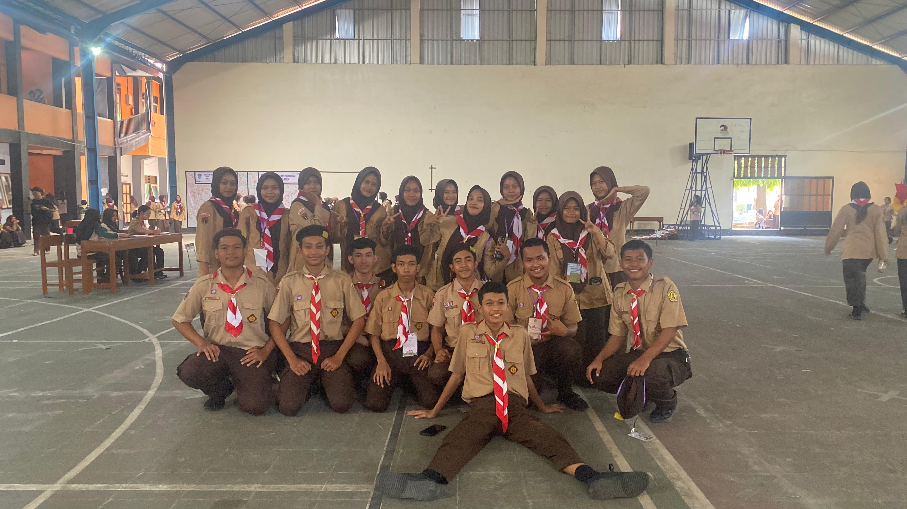
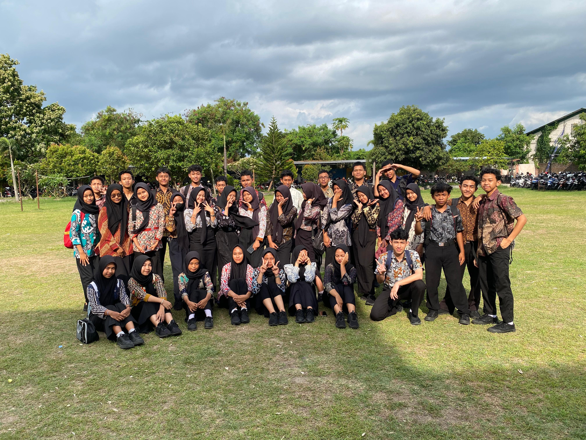
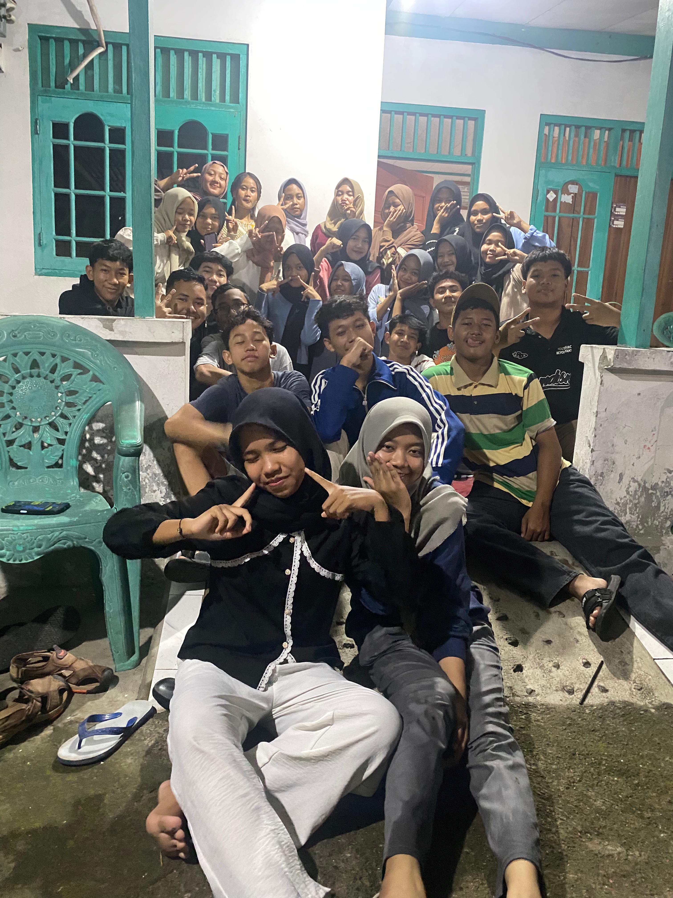
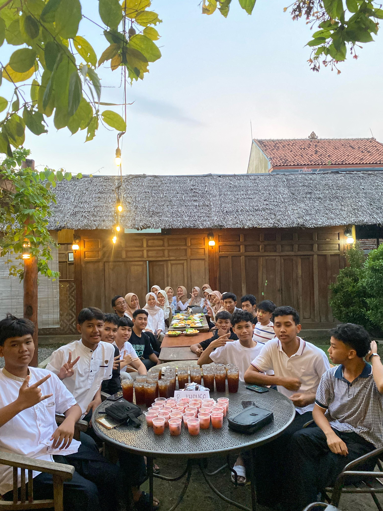
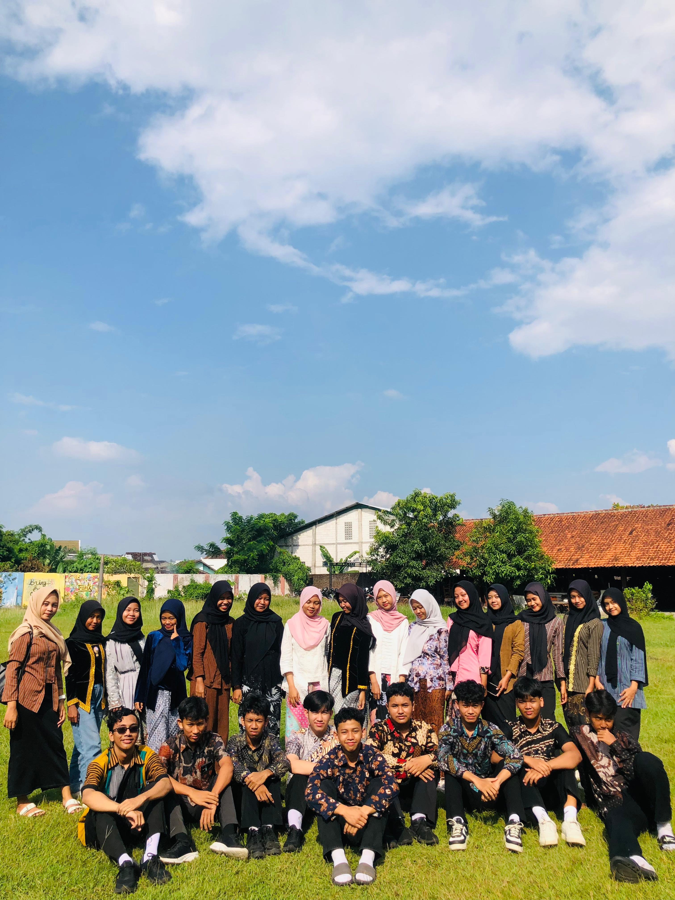
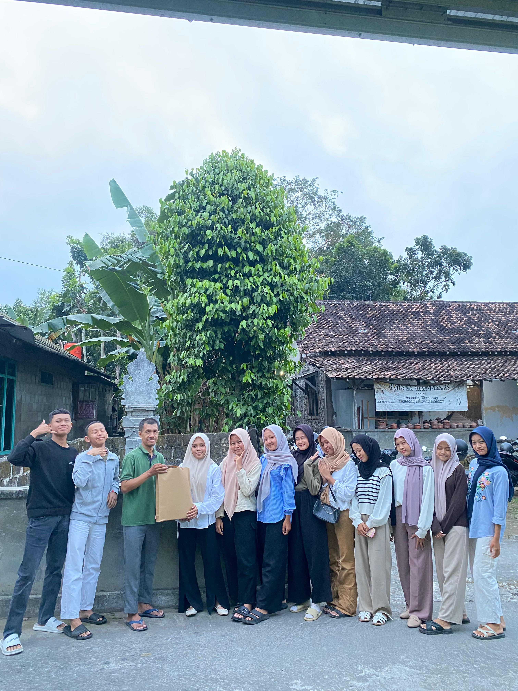

⛺ Memory Gold

🗓️ 14 Agustus 2024
Hari Pramuka
"Seragam cokelat menjadi saksi bisu awal canggung kita. Belum saling kenal, namun tawa di bawah terik lapangan perlahan mencairkan suasana."
👘 Culture Day

🗓️ 2 Oktober 2024
Hari Batik Nasional
"Dalam balutan motif batik yang beragam, kita menyadari satu hal: indahnya kebersamaan lahir dari perbedaan karakter yang saling melengkapi."
🍢 Special Moment

🗓️ 13 Desember 2024
Bakar-Bakar Bersama
"Kehangatan malam di penghujung tahun. Menikmati hidangan sederhana sambil merajut tawa dan saling bertukar kisah tanpa sekat."
🌙 Warm Bukber

🗓️ 21 Maret 2025
Acara Buka Bersama
"Momen penuh kehangatan di bulan suci. Mempererat silaturahmi di luar jam sekolah dengan senyuman dan doa yang saling menguatkan."
🎨 Gelar Budaya

🗓️ 17 Juni 2025
Madyaswari (Gelar Budaya)
"Selebrasi seni dan tradisi Nusantara. Menampil ketenangan dan rasa bangga dalam busana adat yang melestarikan kebudayaan bangsa."
🏠 Silaturahmi

🗓️ 13 Juli 2025
Kunjungan Wali Kelas
"Langkah rasa hormat ke kediaman Bapak Eko tercinta. Tempat bertumpu ilmu dan nasihat yang membimbing perjalanan awal kita di Kelas X."